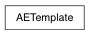

- create a subclass of uitypes.AETemplate
AETemplates which do not meet one of the two requirements listed in step 2 will be ignored. To ensure that your Template’s node type is being detected correctly, use the AETemplate.nodeType() class method:
import AETemplates
AETemplates.AEmib_amb_occlusionTemplate.nodeType()
As a convenience, when pymel is imported it will automatically import the module AETemplates, if it exists, thereby causing any AETemplates within it or its sub-modules to be registered. Be sure to import pymel or modules containing your AETemplate classes before opening the Atrribute Editor for the node types in question.
To check which python templates are loaded:
from pymel.core.uitypes import AELoader
print AELoader.loadedTemplates()
Reload the template. Beware, this reloads the module in which the template exists!